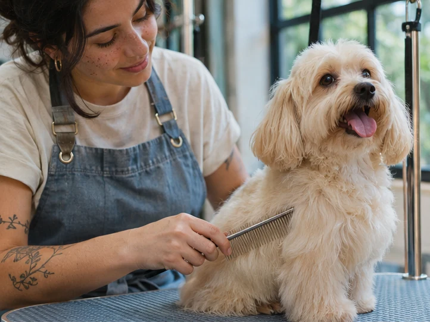

Por onde começa o cuidado?
Escolha o porte e o tipo de pelo do seu cão. O guia coloca as duas informações no resumo para a primeira conversa.

O que contar na chegada
Três detalhes simples ajudam a equipe a entender o que combinar com você.
- Como foram os últimos banhos. Conte se ele já conhece o secador e a escova.
- Se o pelo embaraça. Vale dizer onde aparecem nós com mais frequência.
- Qual acabamento prefere. Uma referência ajuda a alinhar o comprimento antes da tosa.